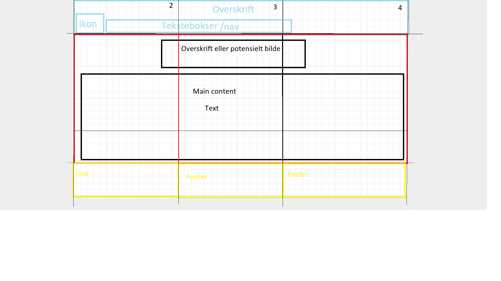
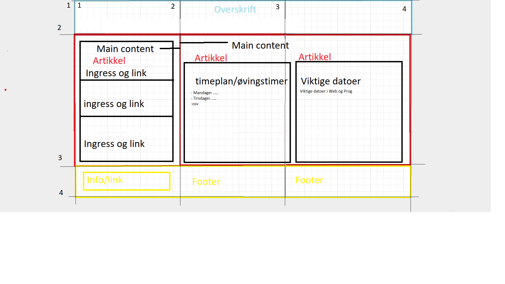

Planleggingen bak denne siden:
Med denne siden så ville jeg ha det så simpelt som mulig. Jeg ønsket ikke en side med veldig mye og mange farger, hovedfokuset var å legge frem informasjon som enkelt kan leses og lett å navigere i.
Header og footerJeg valgte å kun gå for en enkel header med mørk farge, dette gjør at headeren ikke tar alt fokus vekk fra artiklene. Jeg valgte å gå for hvit farge på teksten,grunnen til dette er fordi det er det som er enklest å se på en så mørk bakgrunnsbilde. Det samme gjelder på footer.
ArtiklerPå forsiden har jeg valgt å bare ha med to artikler, en liten som inneholder ingress og knapper til ulike artikler. Denne er kun 30% av siden. Her har jeg valgt å gå for blå knapper fordi det er knappene som skal skille seg mest ut på denne siden. Det skal være lett å legge merke til dem. Så har jeg en artikel som bruker 70% av width. Dette er fordi det er den som skal inneholde mest informasjon på forisden.
FargerGenerelt lys bakgrunn, mørk header og footer. Det er fordi de ikke skal ta alt av oppmerksomhet. Lyse rammer rundt artiklene for å kunne se hvordan de er fordelt. Lyse knapper for å skille seg ut. Linkene endrer farge for å kunne vite hvor du har navigert deg tidligere.
Skisser (Til venstre bare artikkler, høyre bilde er forsiden)  Inspirasjon
| Beskrivelse | Inspirasjon både for måten artiklene er plassert og ikonet i venstre hjørne. |
Denne siden brukte jeg til a se på artikkler | Brukte ikke 3 |
|---|---|---|---|
| URL | |||